Recruitment Gorilla User Guide
Recruitment Gorilla is the in-house applicant tracking system. Recruiters upload CVs, the system extracts the candidate's details for review, and every candidate moves through a hiring pipeline from Uploaded to Hired, with interviews, structured evaluations, offers, dashboards and a full audit trail along the way.
This guide is organized by role. Read Getting started first, then the chapter for your role. Every capability of a lower role is also available to the roles above it.
Last updated: 4 October 2026.
Contents
- Chapter 0: Getting started (everyone)
- Chapter 1: Interviewer guide
- Chapter 2: Recruiter guide
- Chapter 3: Admin guide
- Chapter 4: Super Admin guide
- Chapter 5: Appendix (permission matrix, pipeline map, FAQ)
The four roles at a glance
Roles form a hierarchy. Each role can do everything the roles below it can:
Super Admin > Admin > Recruiter > Interviewer
| Role | In one sentence |
|---|---|
| Interviewer | Sees the interviews assigned to them and submits structured evaluations. |
| Recruiter | Uploads CVs, maintains candidate profiles, schedules interviews and drafts offers for the candidates they own or whose job opening they are assigned to. |
| Admin | Everything a Recruiter does, on all candidates, plus configuration, offer approval, candidate deletion and the audit trail. |
| Super Admin | Everything, plus user accounts, email settings and deleting job openings. |
A user can hold more than one role. Their access is the combination of all of them.
About the screenshots: they were taken with demo accounts and fictional candidates (for example "Demo Recruiter" and "Sadia Islam"). Your screens show your organization's data, but the layout is the same.
Chapter 0: Getting started
For everyone: signing in, your first login, and the parts of the app that look the same for every role.
0.1 Signing in
Open the application in your browser. Sign in with your email address and the password your administrator gave you.
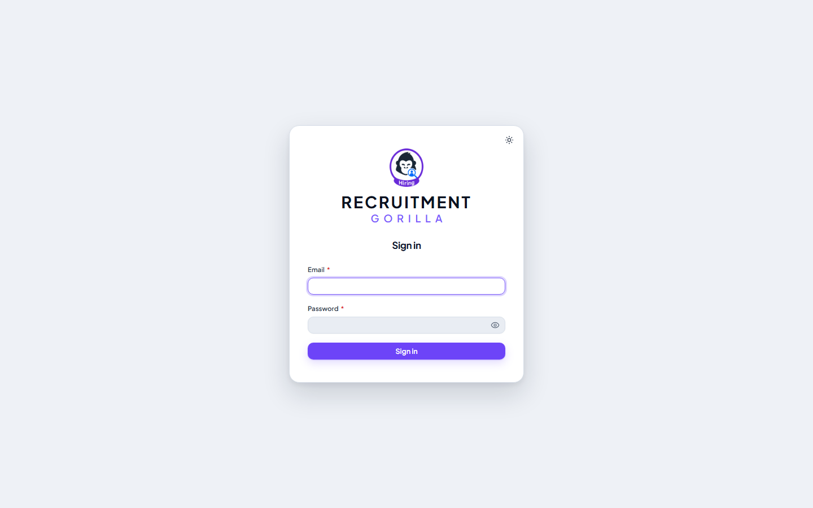
- After signing in you land on the Dashboard, or on the page you were trying to open.
- Your session stays active in the background until it expires or you sign out.
- On a shared computer, always Sign out from the user menu. It ends your session completely.
0.2 First login: set your own password
Accounts are created by a Super Admin with a temporary password. The first time you sign in, and after any password reset, the app takes you to Change password and keeps you there until you choose your own password.
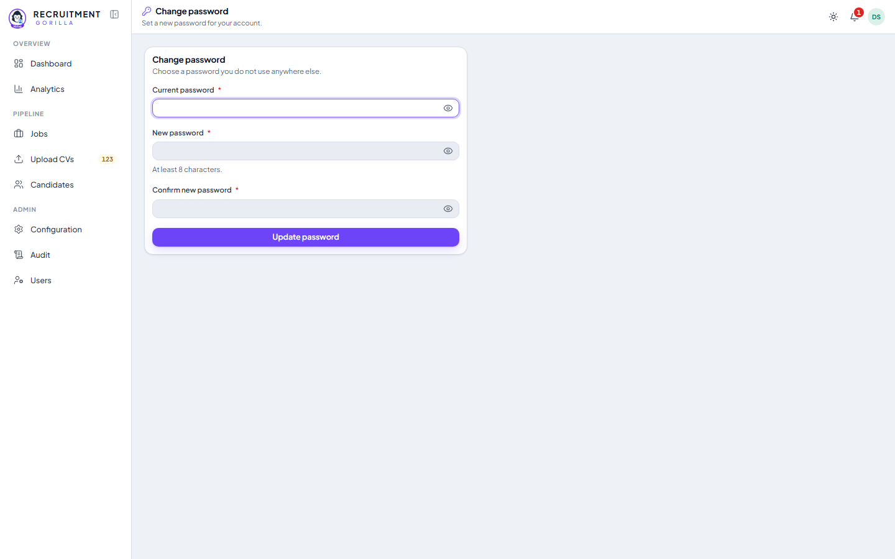
- Enter the temporary password as Current password.
- Choose a New password of at least 8 characters, different from the current one.
- Enter it again in Confirm new password and select Update password. You are taken to the Dashboard.
You can change your password at any time from the user menu (your initials, top right) > Change password. You also get an email when your password changes.
0.3 Finding your way around
The sidebar on the left shows only the pages your role can use. Select the icon beside the logo to collapse it.
| Sidebar group | Pages | Visible to |
|---|---|---|
| Overview | Dashboard | everyone |
| Overview | Analytics | Recruiter and above |
| Pipeline | Jobs, Upload CVs (with a count of drafts waiting), Candidates | Recruiter and above |
| Admin | Configuration, Audit | Admin and above |
| Admin | Users | Super Admin only |
If you open a page your role cannot use, you are taken back to the Dashboard.
The top bar shows the page title and a one-line description, and on the right:
- Theme (sun or moon icon): Light, Dark, or System.
- Notifications (bell): a red badge counts unread items. Select one to open the related page, or Mark all read. The list refreshes about once a minute.
- User menu (your initials): your name, email and roles, Change password and Sign out.
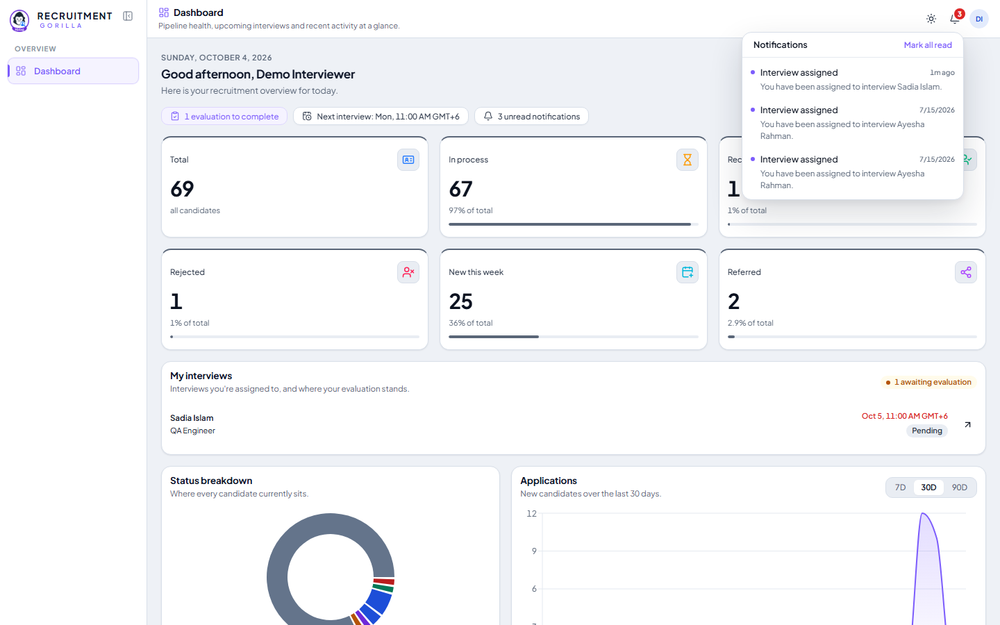
0.4 The Dashboard
Everyone lands on the Dashboard. At the top, a greeting with "needs your attention" chips, such as 1 evaluation to complete, Next interview: ... or 3 unread notifications. Below it:
- Six organization-wide counts: Total, In process, Recommended, Rejected, New this week and Referred. Recruiters and above can select a count to open the matching candidate list.
- My interviews: the interviews you are assigned to.
- Status breakdown and Applications over 7, 30 or 90 days.
- Active job openings: open roles with their end date and number of applicants.
Recruiters and above also get a My pipeline section. See 2.2.
Chapter 1: Interviewer guide
You review the candidates you are scheduled to interview and submit a structured evaluation. A recruiter cannot mark an interview as completed until at least one interviewer has submitted, so the pipeline waits for you.
1.1 What you can see
As an Interviewer you see the Dashboard and the interviews assigned to you. You cannot browse the candidate list. Each interview gives you a read-only view of that candidate, including their CV.
1.2 Your interviews
When you are assigned to an interview you get a notification in the app and an email with a calendar invite. The interview also appears under My interviews on your Dashboard:
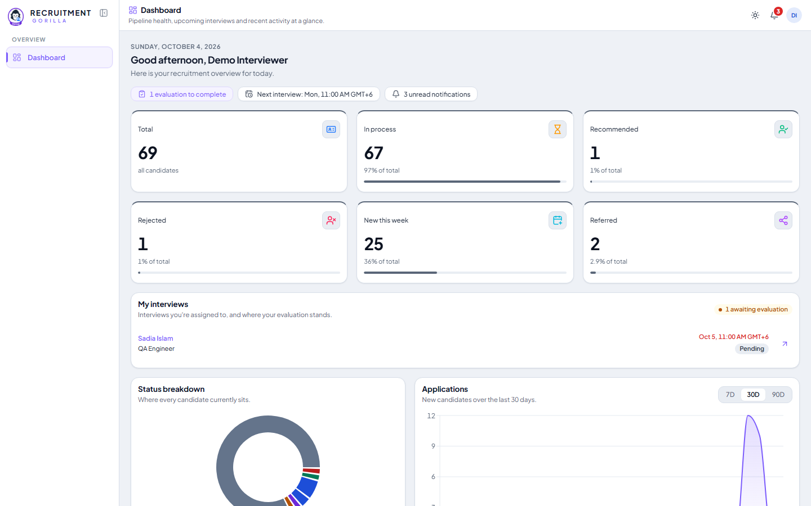
- Each row shows the candidate, the job opening, the date and time (in red when it is less than 24 hours away) and your evaluation state: Pending, Draft or Submitted.
- Select a row to open the interview page.
1.3 The interview page
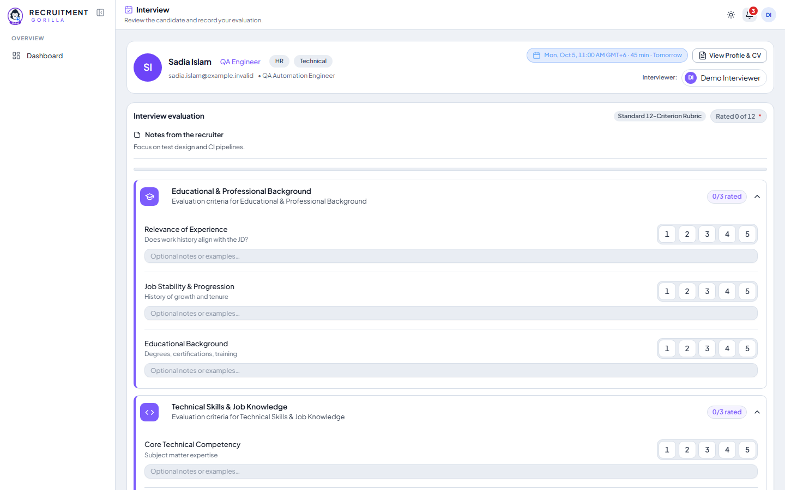
- Header: the candidate's name and email, the job opening, the interview type tags (for example Technical, HR), the date with its duration, and the interview panel.
- View Profile & CV: opens the candidate's profile in a side panel: contact details, experience, skills, summary, education, work history and the CV itself.
- Notes from the recruiter: what the recruiter wants you to know before the interview.
- Interview evaluation: the form, described next. The badge at the top shows which rubric is used and how many criteria you have rated.
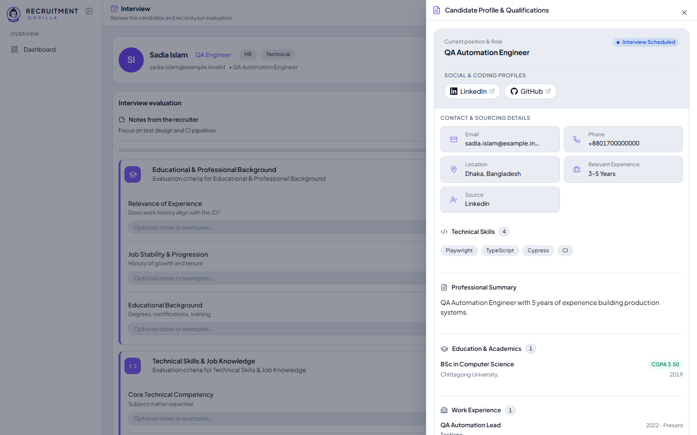
1.4 Filling in the evaluation
The evaluation uses the rubric set for the job opening (by default, 12 criteria in four sections). Rate each criterion from 1 to 5 and add notes if useful:
- Educational & Professional Background: relevance of experience, job stability and progression, educational background.
- Technical Skills & Job Knowledge: core technical competency, tools and software proficiency, problem-solving.
- Soft Skills & Communication: communication clarity, listening, adaptability.
- Cultural Fit & Motivation: alignment with company values, motivation, team dynamics.
At the bottom, the Overall evaluation asks for:
- General assessment: free text on strengths, areas to improve and concerns.
- Final recommendation (required): Recommended, Hold, Reject or Other (Other asks you to explain).
- Overall rating (required): your single 1 to 5 verdict.
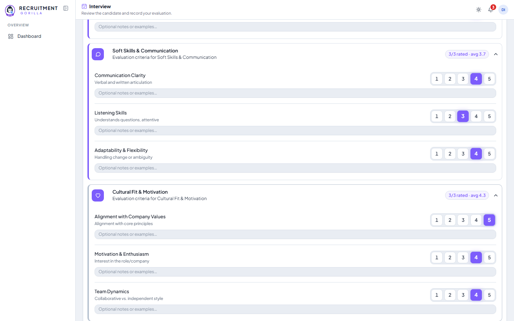
1.5 Save draft or Submit
| Button | What it does |
|---|---|
| Save draft | Saves what you have entered so far. Nothing is required. Come back any time. |
| Submit evaluation | Finalizes your evaluation. Every criterion must be rated and the recommendation and overall rating chosen. You are asked to confirm. |
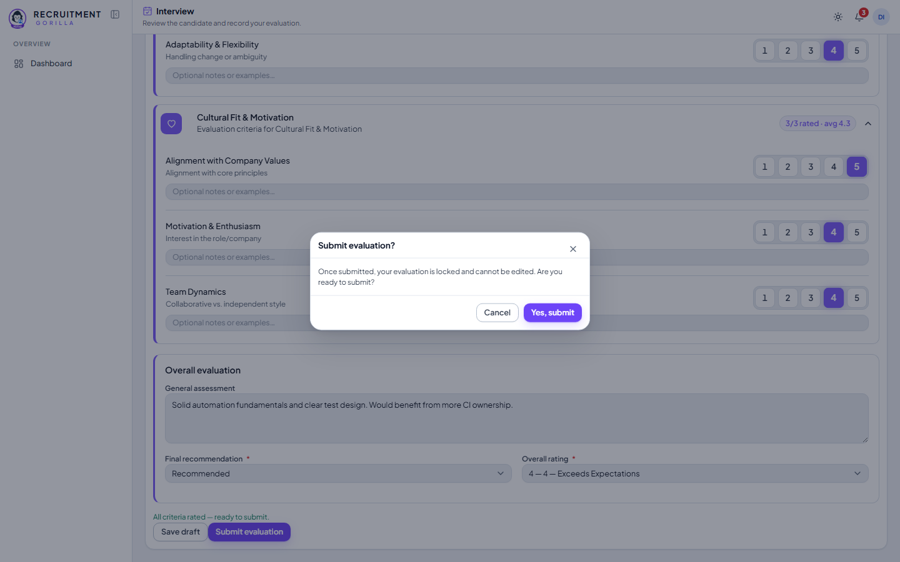
Submitting is final. Your evaluation is then locked and shown read-only:
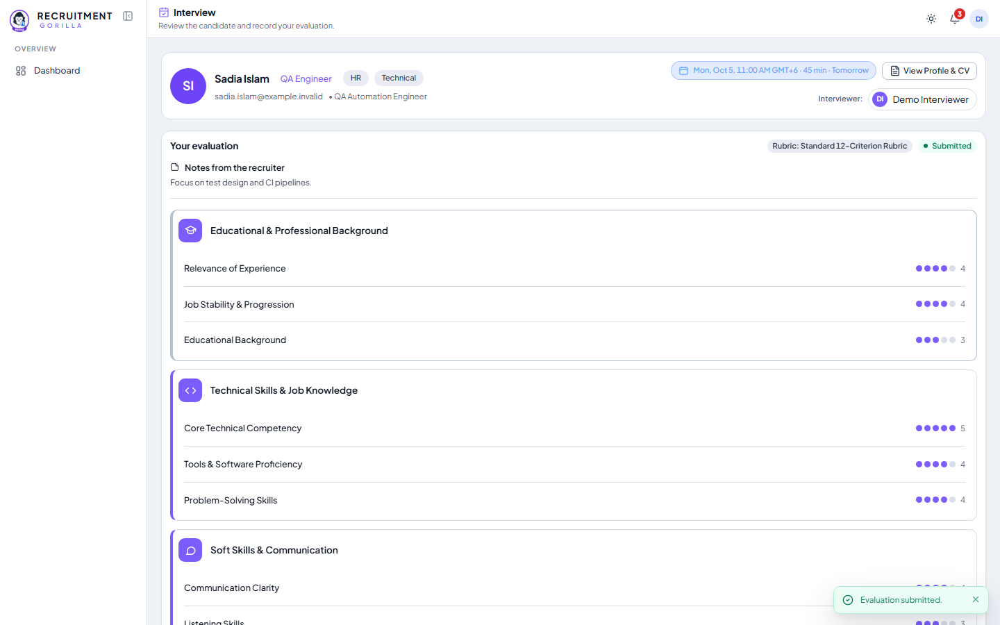
After you submit, you can also see the evaluations other panel members have submitted for the same interview. You cannot see theirs before you submit your own.
Chapter 2: Recruiter guide
You run the pipeline: upload CVs, keep profiles accurate, move candidates from Uploaded towards Hired, schedule interviews and prepare offers.
2.1 Which candidates you can see
You can work with a candidate when either is true:
- You created them (you are the owner), or
- You are an assigned recruiter of their job opening. An Admin assigns recruiters to each opening in Configuration. Every candidate under that opening is then yours to manage, whoever created them.
This rule applies everywhere: the candidate list, profiles, CV files, status changes, offers, Analytics and your Dashboard. You cannot delete candidates; ask an Admin.
2.2 Your dashboard
Your Dashboard adds Candidates and Upload CVs shortcuts at the top:
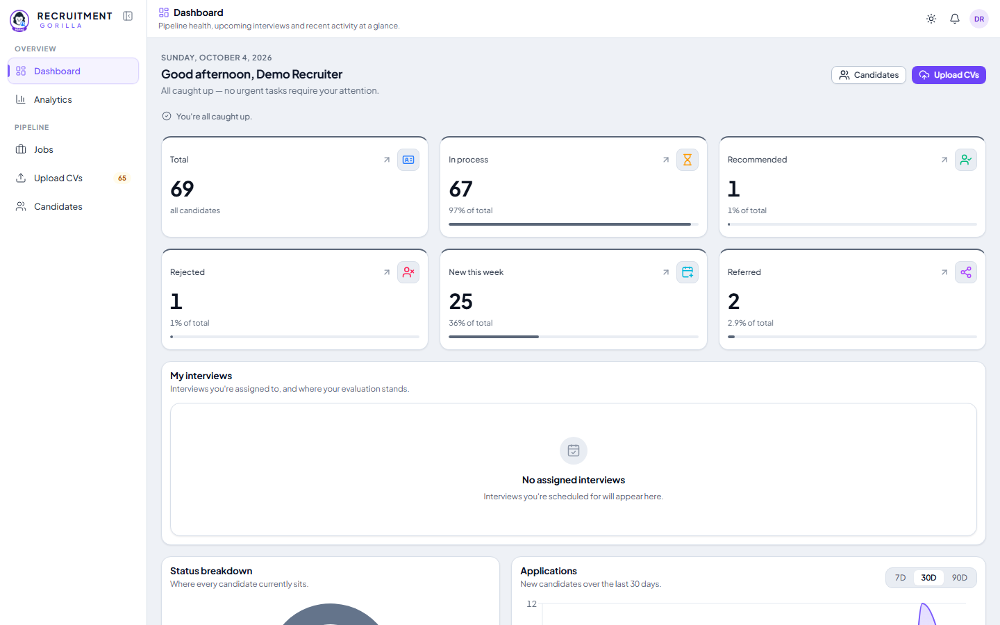
Further down, My pipeline is scoped to your candidates, with a Role filter for one of your job openings: candidates by role, top skills, offer metrics, upcoming interviews and recent activity.
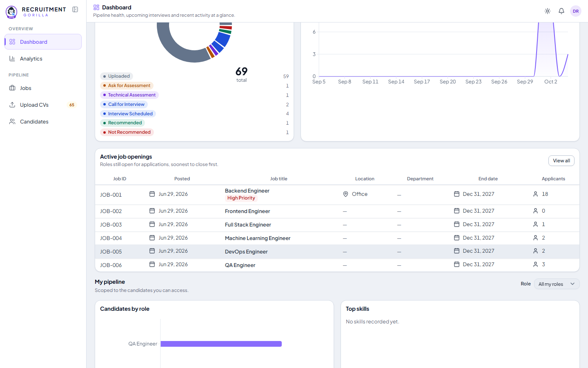
2.3 Adding candidates: Upload CVs
Adding candidates has two steps: upload the CVs, then review what was extracted.
Step 1: Upload & Intake
- Open Upload CVs.
- Optionally enter a Batch label (for example "QA intake October") and pick the Job opening the CVs are for.
- Drag PDF or Word (.docx) files onto the drop area, or select it to browse. Each file can be up to 10 MB, and you can drop many at once.
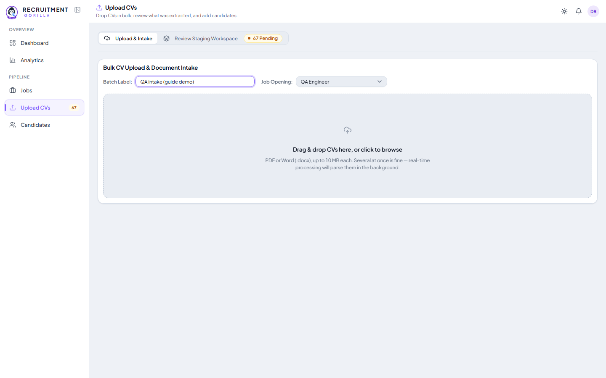
Each CV is read in the background and saved as a draft. When it finishes, select Open Review Workspace.
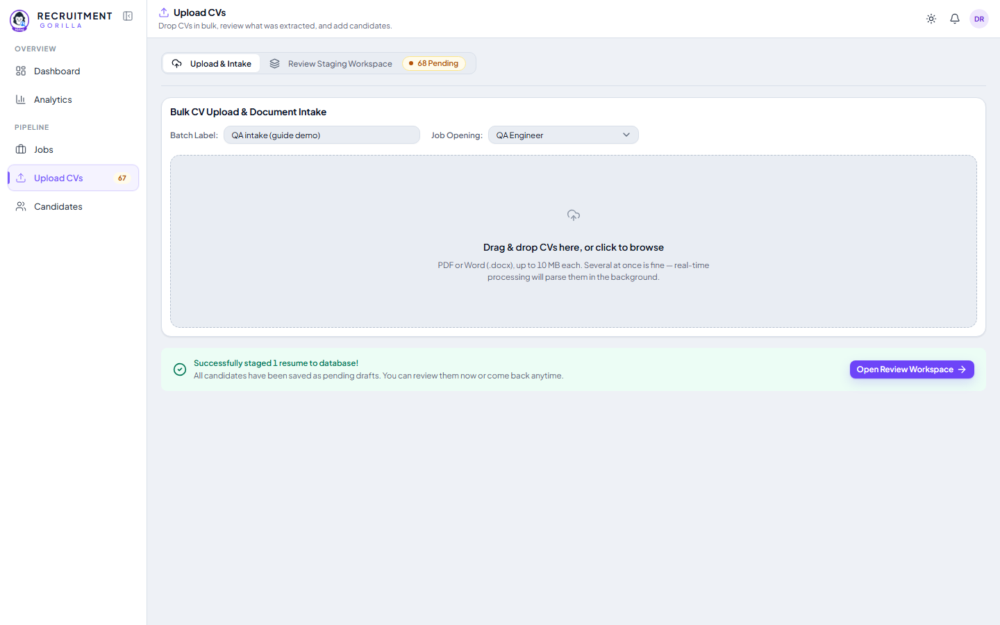
A CV the system already holds (waiting as a draft, or attached to a candidate) is skipped and marked Duplicate.
Step 2: Review Staging Workspace
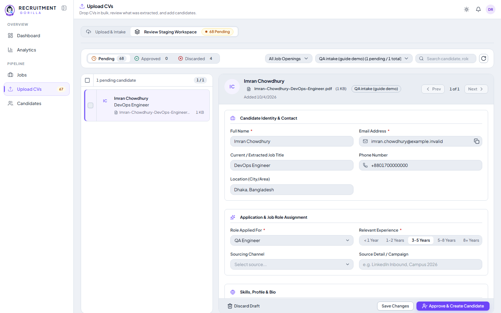
- The left list shows your Pending drafts. Filter by job opening or upload batch, or search.
- The right side shows the extracted details for the selected draft. Check and correct them: name, email, phone, title, location, role applied for, relevant experience, sourcing channel, skills, summary, links, education and work history.
- Approve & Create Candidate creates the candidate at status Uploaded. Save Changes keeps your edits for later. Discard Draft removes it.
- Shortcuts: Ctrl+Enter approves, Ctrl+Left and Ctrl+Right move through the queue.
- Tick several drafts to Approve Selected or Discard Selected at once.
Required to approve: Full name, a valid Email, and a Role applied for that is active and not past its end date.
2.4 The candidate list
Candidates shows everyone you can access.
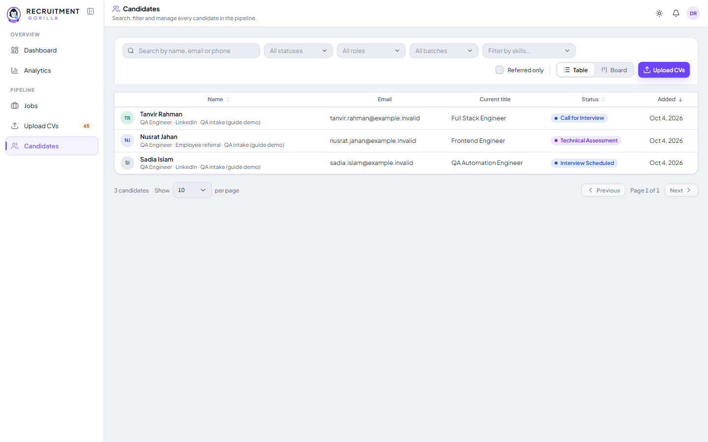
- Search by name, email or phone. Filter by status, role, batch, skills, or Referred only. Clear filters resets them.
- Sort by Name, Status or Added (newest first by default). Choose 10 to 100 rows per page.
- Your filters are kept in the page address, so you can bookmark or share a filtered list.
Switch to Board to see one column per pipeline stage:
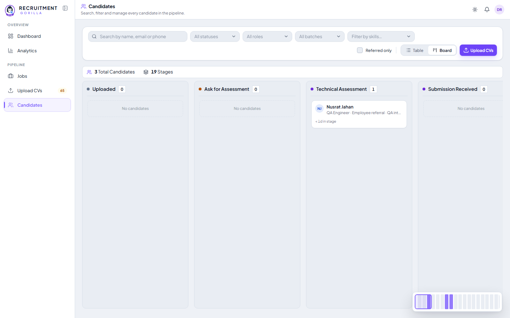
Drag a card to another column to change its status. If the new status needs more details (for example an interview time), the Add status panel opens. A move that the pipeline does not allow is refused with a message.
2.5 The candidate profile
Select a candidate to open their profile:
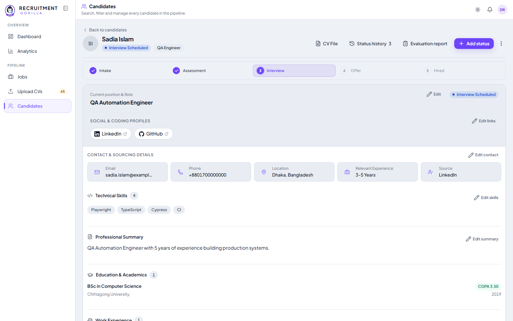
- Header: name, current status and job opening, plus CV File (preview and download), Status history, Evaluation report, Add status, and the ... menu with Edit profile (and Delete candidate for Admins).
- Pipeline stepper: Intake > Assessment > Interview > Offer > Hired.
- Profile: current position, LinkedIn and GitHub links, contact and sourcing details, skills, summary, education and work experience. Each part has its own Edit link.
- Offer & Compensation: appears once the candidate is recommended. See 2.8.
Status history opens the full timeline, newest first. Each entry shows the status, when and who changed it, the comment and any details (task, submission link, interview time, tags and panel). Advance Stage opens Add status from here.
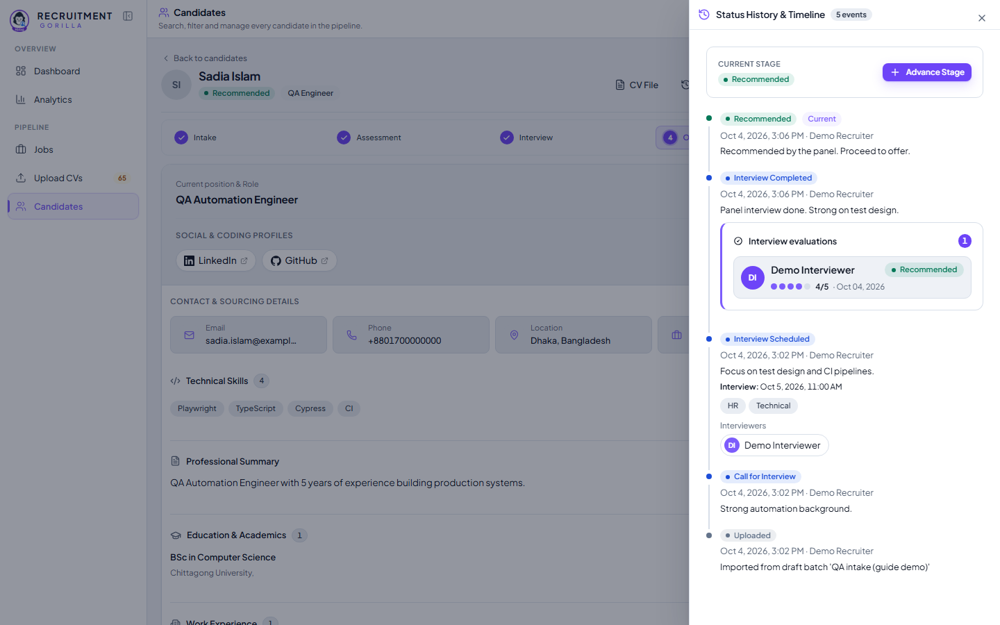
If the job opening's End Date has passed, a "Job opening closed" banner appears and editing, status changes and offers are blocked for everyone until an Admin extends the date.
2.6 Moving a candidate through the pipeline
Select Add status, choose the New status, add a comment and Save status. Only the statuses allowed from the current one are offered. The main path is:
**Uploaded > Ask for Assessment > Technical Assessment > Submission Received > Code Review > Call for Interview > Interview Scheduled > Interview Completed > Recommended > Offer Preparation
Offer Extended > Offer Accepted > Hired**
You can also go straight from Uploaded to Call for Interview. Side exits such as Not Available, Reject, Discontinued, No Submission, Not Recommended and Offer Declined are offered where they apply. The full map is in 5.2.
Some statuses need extra details. The form asks for them:
| Moving to... | You must provide |
|---|---|
| Technical Assessment | the task details and a comment |
| Submission Received | the submission link |
| Interview Scheduled | date and time and at least one interviewer |
| Interview Completed | a comment; at least one interviewer must have submitted their evaluation |
| Reject, Discontinued, Offer Declined | a comment explaining why |
| Recommended | the candidate must have passed Code Review or Interview Completed |
| Hired | the candidate must have Offer Accepted |
2.7 Scheduling interviews
Choose Interview Scheduled in Add status and the form expands:
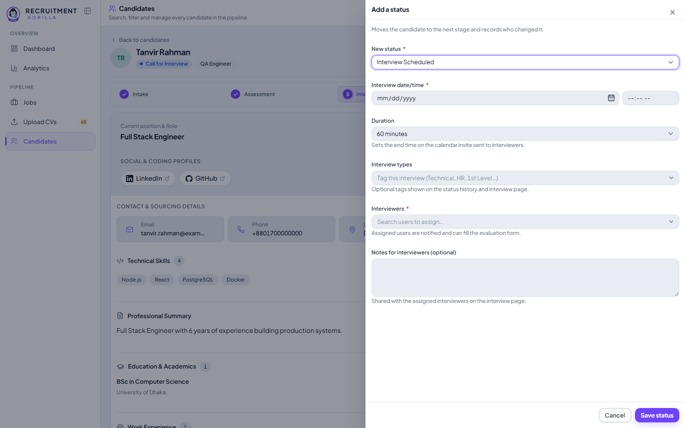
- Interview date/time (required) and Duration (15 to 120 minutes).
- Interview types: optional tags such as Technical, HR, 1st Level.
- Interviewers (required, one or more): each gets a notification, an email with a calendar invite, and the interview on their Dashboard.
- Notes for interviewers: shown to the panel as "Notes from the recruiter".
Completing an interview. After the panel has submitted, move the candidate to Interview Completed. Evaluation report then shows every submitted evaluation, the average overall rating, the recommendations and the average per criterion. Use Print or Open as a page to share it.
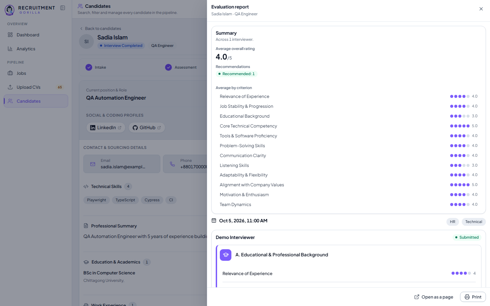
Another round? From Interview Completed you can schedule again. The new interview gets its own panel and evaluations, and the history keeps both rounds.
2.8 Offers
Once a candidate is Recommended, the Offer & Compensation card lets you prepare an offer.
Select Draft Offer and fill in the job title, annual base salary, currency, and optionally bonus, equity, start date, expiry date and notes. Create Offer. The candidate moves to Offer Preparation.
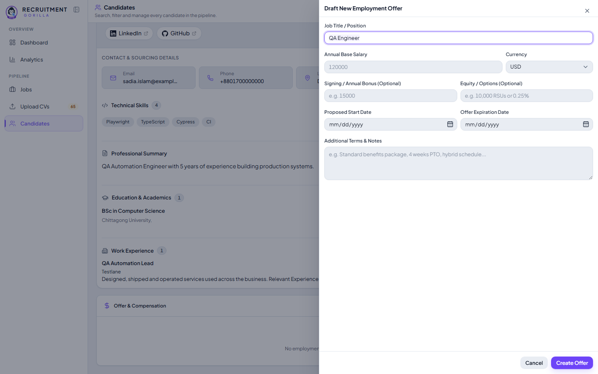
Drafting an offer Request Approval sends it to an Admin, who approves or rejects it (a rejected offer goes back to draft). Approval is optional: you can also Extend Offer straight from a draft.
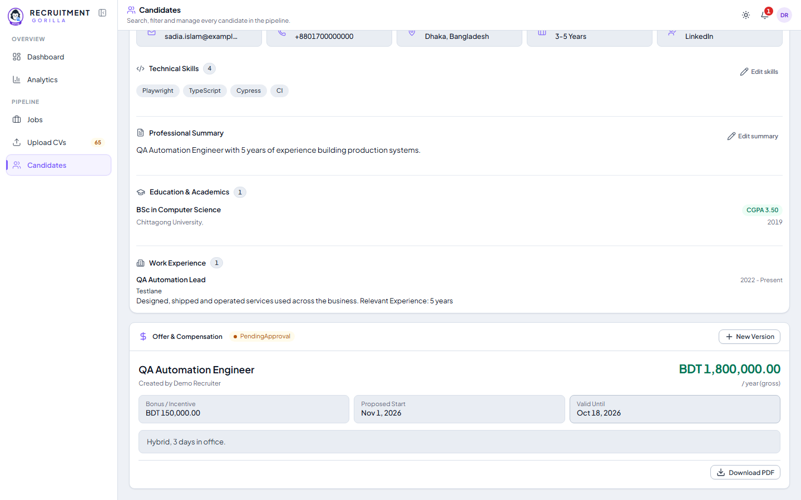
Offer waiting for approval Extend Offer to Candidate moves the candidate to Offer Extended. Send the offer itself outside the app (use Download PDF).
Record Candidate Decision: Accepted moves the candidate to Offer Accepted; Declined (with a reason) moves them to Offer Declined.
Finally, use Add status > Hired.
New Version starts a revised offer. The app never emails candidates; all candidate communication happens outside it.
2.9 Jobs and Analytics
Jobs gives an overview of every job opening: totals, active and closing-soon counts, each opening's status, priority, deadline progress, rubric and assigned recruiters. Select an opening's candidate count to see those candidates. Openings are created and edited by Admins in Configuration.
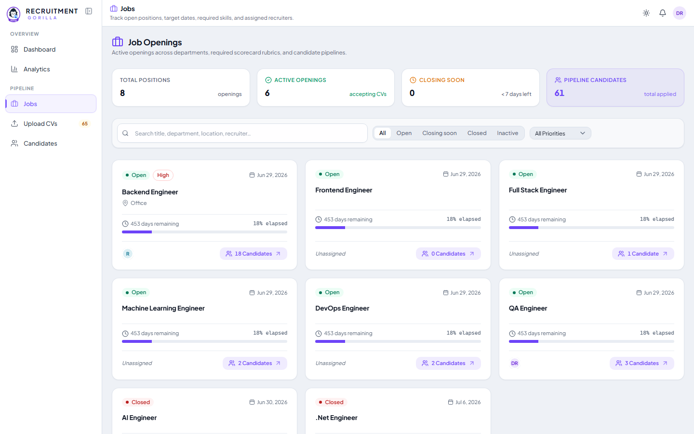
Analytics shows average time to hire, pipeline velocity, funnel conversion, stage dwell time (stages over 7 days are flagged), sourcing channel performance and recruiter workload. Choose a period (7 days to All time) and a job opening. As a Recruiter you see figures for your own candidates only. Print Report prints the page.
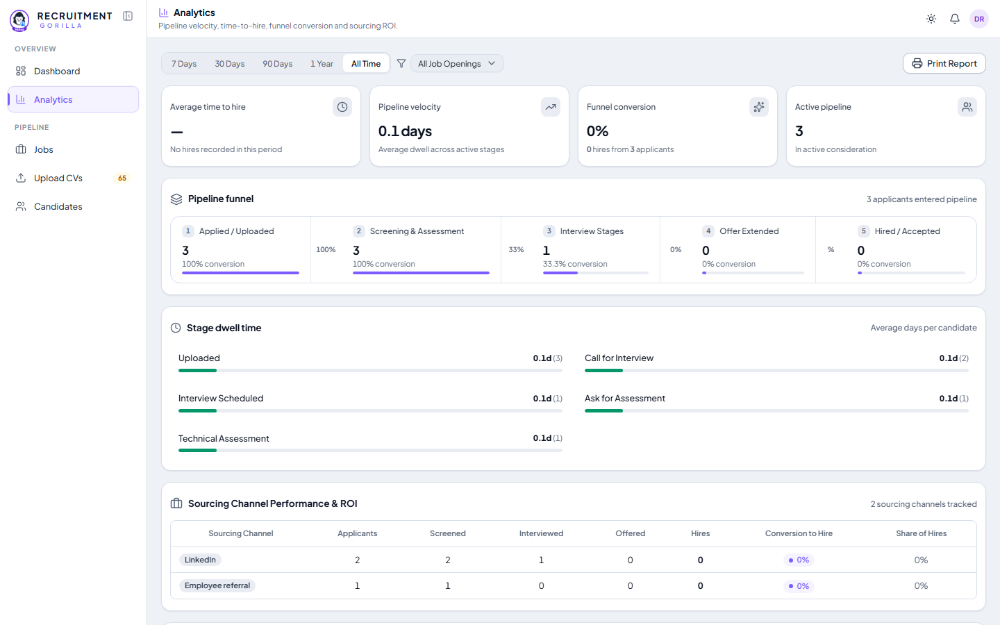
Chapter 3: Admin guide
You keep the system running for everyone else. An Admin can do everything a Recruiter can, on all candidates, plus approve offers, maintain configuration, delete candidates and review the audit trail.
3.1 What Admin adds
| Capability | Notes |
|---|---|
| See and manage all candidates | no ownership or assignment limits |
| Approve or reject offers | on offers a recruiter sent for approval |
| See evaluation cards in the Status history | recruiters see them in the Evaluation report |
| Delete a candidate | permanent: removes the profile, history and CV files |
| Configuration | rubrics, skills, sources, interview types, job openings |
| Audit | the who-changed-what-when log |
3.2 Approving offers
An offer waiting for approval shows Approve Offer and Reject to Admins:
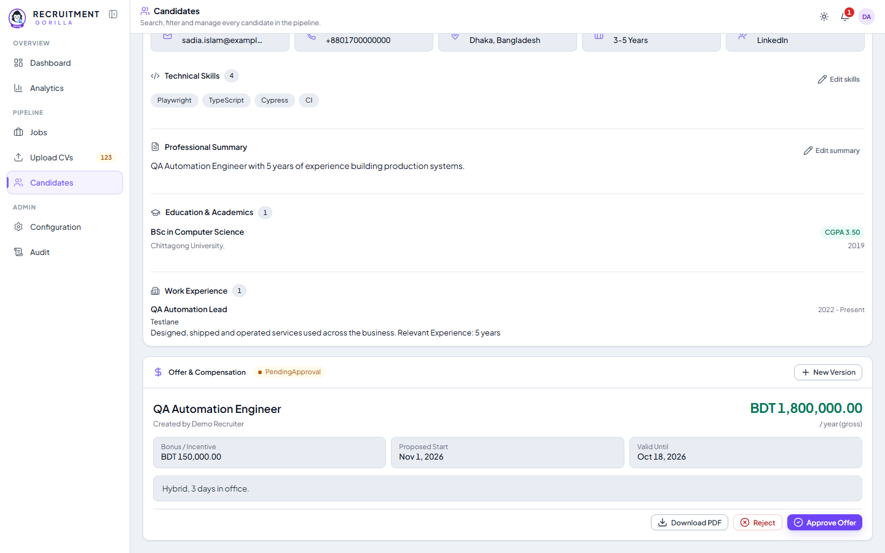
In the candidate's Status history, Admins also see each interviewer's evaluation card (recommendation and overall rating) under Interview Completed:
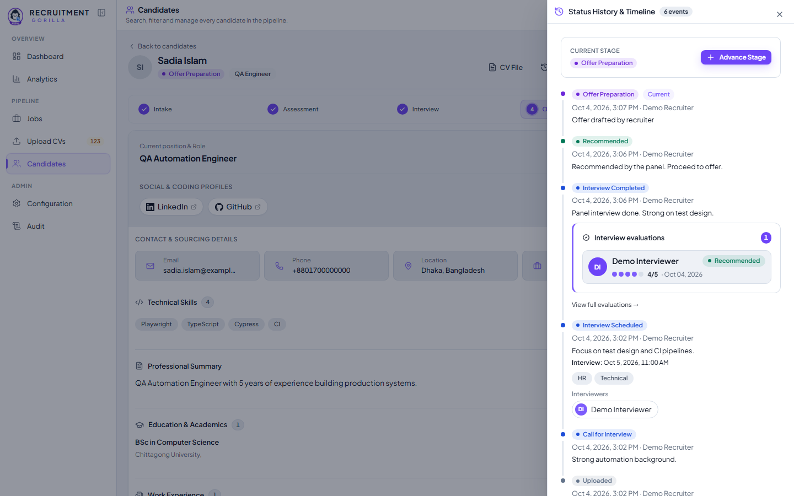
3.3 Configuration
Configuration has one tab per list. Each tab has search and All, Active and Inactive filters.
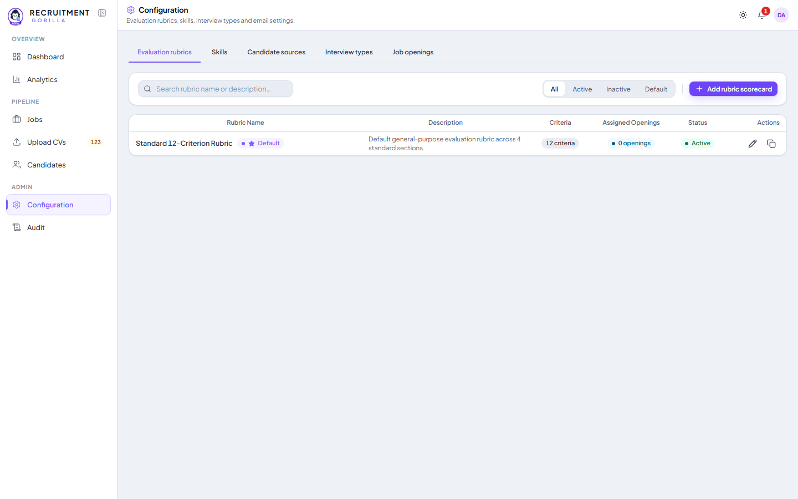
| Tab | What you manage |
|---|---|
| Evaluation rubrics | The scorecards interviewers fill in: sections, criteria and weights. Create, edit, duplicate, set the default, or delete (the default rubric cannot be deleted). |
| Skills | Skill tags offered on candidate profiles and in filters. |
| Candidate sources | Where candidates come from (LinkedIn, Employee referral...), used in Analytics. |
| Interview types | Tags recruiters attach when scheduling (Technical, HR, 1st Level...). |
| Job openings | Each opening's name, Closes date (required), priority, location, department, rubric, recruiters and Active flag. |
For skills, sources and interview types, deleting an item that is already in use deactivates it instead, so history is kept.
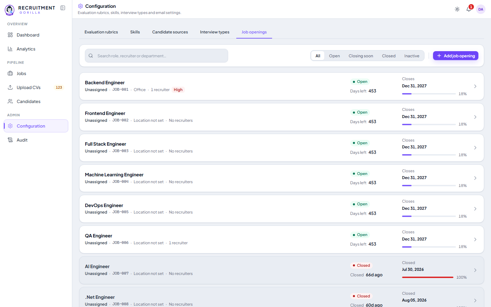
Job openings drive access and locking, so keep them current:
- Recruiters: assigning a recruiter gives them every candidate under the opening.
- Closes date: after it passes, the opening locks: no edits, status changes or offers for its candidates until you extend the date.
- Rubric: the scorecard interviewers use for this opening (the default rubric if none).
- Deleting an opening is Super Admin only.
3.4 Deleting a candidate
On the candidate list (row menu) or the profile (... menu), Admins have Delete. After you confirm, the candidate, their history and CV files are removed permanently. The deletion is recorded in the audit trail.
3.5 The audit trail
Audit answers "who changed what, and when":
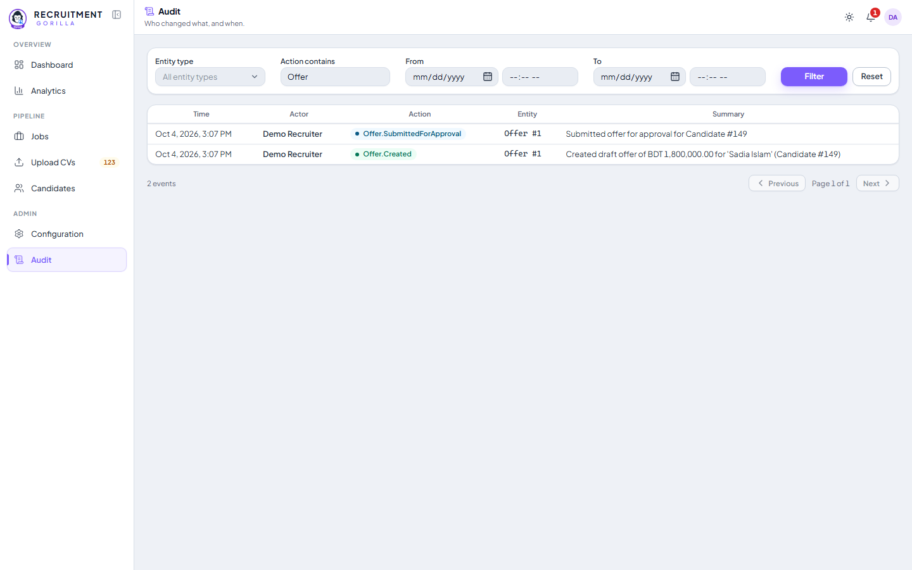
Every change is recorded: sign-ins (including failed attempts), password changes, candidate
changes and status moves, evaluations, offers, configuration and user management. Each row shows
the time, the person, a colored action (for example Offer.Created, Auth.LoginFailed), the
record and a summary.
Filter by Entity type, Action contains and a From / To date and time, then Filter. Results are newest first, 50 per page. The log cannot be edited or deleted by anyone.
Chapter 4: Super Admin guide
You own the accounts. A Super Admin can do everything an Admin can, plus manage users, email settings and deleting job openings.
4.1 What Super Admin adds
| Capability | Notes |
|---|---|
| Users page | add users, set roles, activate or deactivate, reset passwords |
| Email tab in Configuration | the mail server used for invites and account emails |
| Delete a job opening | Admins can only edit or deactivate openings |
4.2 Managing users
Users lists every account with name, email, roles, status, last login, and whether they must change their password.
Add user and provide:
- Name and Email. The email is the sign-in and must be unique.
- Roles: one or more of Super Admin, Admin, Recruiter, Interviewer.
- Temporary password (at least 8 characters). The user gets an email and must set their own password at first sign-in (see 0.2).
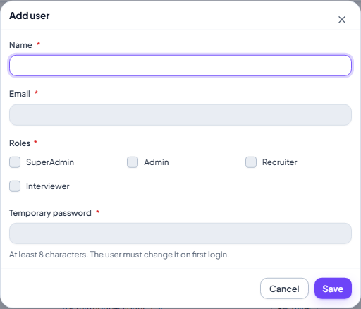
Choosing the right role:
- Only conducts interviews: Interviewer.
- Sources and manages candidates: Recruiter, then have an Admin assign them to job openings, or they will only see candidates they create themselves.
- Maintains configuration, approves offers or needs to see everything: Admin.
- Keep Super Admin to the smallest possible group.
Edit changes a user's name, roles and Active flag. Deactivate stops the account from signing in and from being assigned to interviews; its history is kept. There is no delete. Reset password sets a new temporary password; the user is emailed and must change it at next sign-in.
Guard rail: the system refuses to deactivate, or remove the role from, the last active Super Admin, so you cannot lock everyone out.
4.3 Email settings
The Email tab (Super Admin only) holds the mail server settings: host, port, STARTTLS, username, password, sender address and name, plus Email Delivery on or off and a test send. The app emails users only (interview invites, new accounts, password resets and changes), never candidates.
4.4 Deleting job openings
Only Super Admins can delete an opening in Configuration. If candidates were ever filed under it, the opening is deactivated instead and the app shows how many candidates block deletion.
4.5 Good habits
- Check Audit now and then for bursts of
Auth.LoginFailedand unexpected user or role changes. - Deactivate accounts of people who leave. The Last login column shows inactive accounts.
- Keep each opening's recruiters and Closes date current: they control access and locking.
Chapter 5: Appendix
5.1 Permission matrix
| Capability | Super Admin | Admin | Recruiter | Interviewer |
|---|---|---|---|---|
| Dashboard | Yes | Yes | Yes | Yes |
| Assigned interviews and evaluations | Yes | Yes | Yes | Yes |
| Analytics, Jobs | Yes | Yes | own scope | - |
| View and browse candidates | all | all | own or assigned opening | assigned interviews only |
| Upload CVs and create candidates | Yes | Yes | Yes (becomes owner) | - |
| Edit candidates, change status | all | all | own or assigned opening | - |
| Evaluation report | all | all | own or assigned opening | - |
| Draft and extend offers | Yes | Yes | own or assigned opening | - |
| Approve or reject offers | Yes | Yes | - | - |
| Delete candidate | Yes | Yes | - | - |
| Configuration | Yes | Yes | - | - |
| Delete a job opening | Yes | - | - | - |
| Audit | Yes | Yes | - | - |
| Users, Email settings | Yes | - | - | - |
5.2 The pipeline map
| From | Can move to |
|---|---|
| Uploaded | Ask for Assessment, Call for Interview, Not Available, Reject, Discontinued |
| Ask for Assessment | Technical Assessment, Not Available, Discontinued |
| Technical Assessment | Submission Received, No Submission, Not Available, Discontinued |
| Submission Received | Code Review |
| Code Review | Call for Interview, Not Recommended, Not Available, Discontinued |
| Call for Interview | Interview Scheduled, Not Available, Discontinued |
| Interview Scheduled | Interview Completed, Not Available, Discontinued |
| Interview Completed | Recommended, Not Recommended, Interview Scheduled (another round), Not Available, Discontinued |
| Recommended | Offer Preparation, Offer Extended, Reject, Discontinued |
| Offer Preparation | Offer Extended, Offer Declined, Reject, Discontinued |
| Offer Extended | Offer Accepted, Offer Declined, Reject, Discontinued |
| Offer Accepted | Hired, Offer Declined, Discontinued |
| Offer Declined | Offer Preparation, Reject, Discontinued |
| Not Recommended, Not Available, Hired | Discontinued |
| No Submission, Reject, Discontinued | (final, no further moves) |
Offer actions on the Offer card (draft, extend, record decision) move the candidate automatically.
5.3 FAQ
I'm a Recruiter and I can't see a candidate I know exists. You only see candidates you created or that belong to a job opening you are assigned to. Ask an Admin to add you as a recruiter of that opening (Configuration > Job openings).
The "Role applied for" list is empty when I review a draft. You have no assigned openings yet, or the opening has closed. Ask an Admin.
I can't edit a candidate or change their status. Check for the "Job opening closed" banner. Once the opening's Closes date passes, it locks for everyone until an Admin extends it.
Why can't I move the candidate to Interview Completed? At least one assigned interviewer must submit (not just save a draft) their evaluation first. Their Dashboard shows it as Pending or Draft.
My upload says Duplicate. That exact file is already in the system, as a draft or on a candidate. Find the existing record instead.
The interviewer can't edit their evaluation. Submitted evaluations are locked by design. If another round is needed, schedule a new interview from Interview Completed.
I deleted a candidate by mistake. Can it be undone? No. Deletion is permanent, which is why it is Admin-only and asks for confirmation. The audit trail still records who deleted what and when.
Why am I stuck on Change password? Your account has a temporary password (new account or reset). Set your own and the app unlocks.
Does the candidate get emails from the system? No. The app emails users only. Communication with candidates, including sending offers, happens outside the app.
Can one person be both Recruiter and Interviewer? Yes. Roles combine.